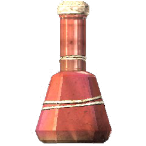

Produtos
Potion of cure disease
Indispensável para qualquer tipo de aventureiro, esta poção cura qualquer tipo de doença, desde uma simples intoxicação alimentar até uma Sanguinare Vampiris (se consumida nos primeiros 3 dias após a infecção).
R$50,00
Potion of Blood
Cansado de caçar humanos? Esta poção é para você, amigo vampiro. Similar ao sangue humano, uma única dose é capaz de regenerar toda a sua saúde em até 10 minutos. Um frasco rende aproximadamente 10 doses.
R$30,00
Elixir of True Shot
Vai para uma batalha mortal ou simplesmente sair caçar um animal para o almoço? Esta poção mágica, que é voltada especialmente para os arqueiros, aumenta o dano das flechas em 50% durante 1 minuto.
R$35,00
Potion of Waterbreathing
Esta poção garante 15 segundos de respiração debaixo d'água, sem a necessidade de qualquer equipamento. Para uma duração maior, múltiplos frascos podem ser ingeridos, pois não há efeitos colaterais.
R$13,50
Potion of Plentiful Magicka
Poção favorita dos magos experientes e feita com ingredientes raros da alquimia, esta poção é capaz de regenerar 75% da magia. Não é indicada para Orcs, pois pode haver efeitos colaterais.
R$20,00
Deadly Stamina Poison
Voltado para quem vai enfrentar qualquer tipo de guerreiro, este veneno poderoso drena aproximadamente 90% do vigor do inimigo. Pode ser usado em adagas, flechas ou até mesmo em machados de duas mãos.
R$45,00
Quem somos
Poções e Soluções foi uma das pioneiras da alquimia em Capivari e hoje é uma das maiores da região. Desde sua criação, a empresa é formada por histórias incríveis e por um time obcecado por qualidade, já que o nosso foco é a satisfação do cliente.
Com ótimos preços e com mais de 2000 produtos no catálago, a Porções e Soluções está sempre à frente e traz em primeira mão os melhores lançamentos, além de produtos exclusivos.
São mais de 100 mil pessoas e 150 espécies satisfeitas apenas com venda presencial. Agora inserida no mercado eletrônico, a tendência é que esses números crescam e que possamos levar a nossa qualidade para o mundo todo.
Histórico
Fundada por Annabelle Merigold em 1867 no Beco Vertical, a Poções e Soluções passou por muitas reformas, sempre buscando o melhor ambiente para os clientes e colaboradores. As imagens a seguir mostram um pouco dessa história.